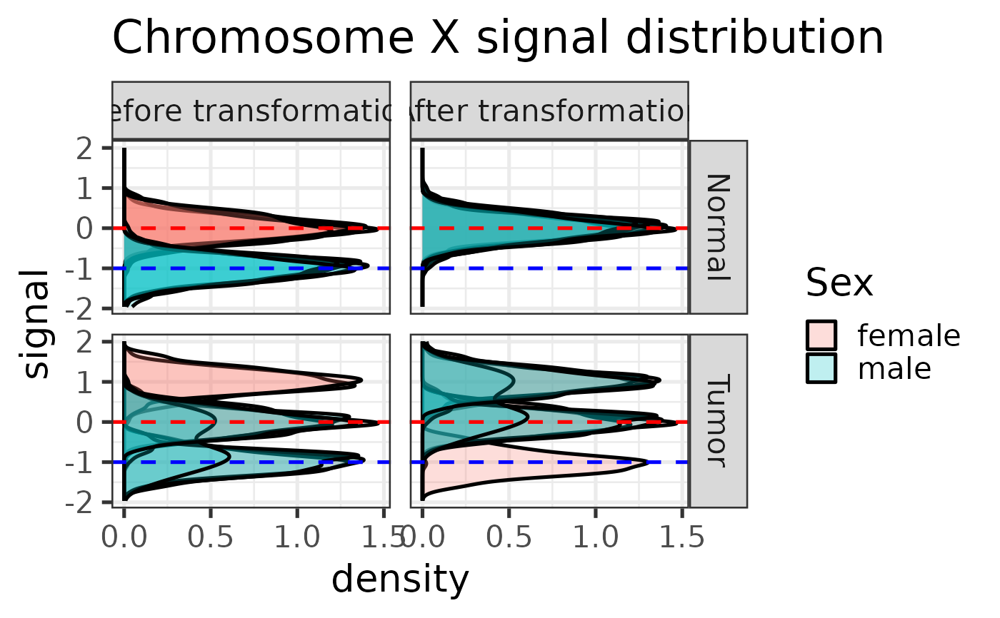
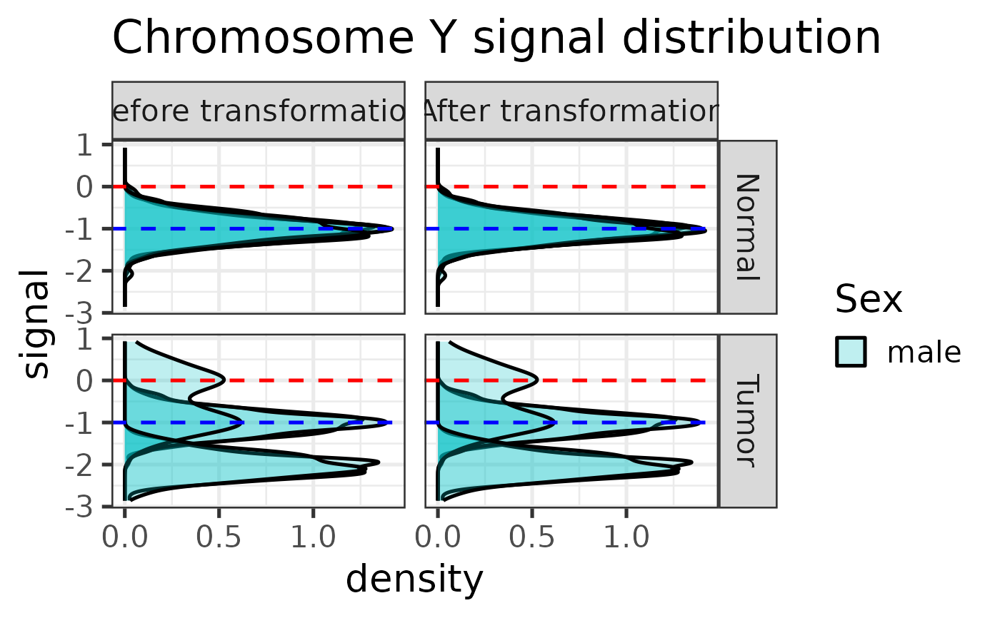
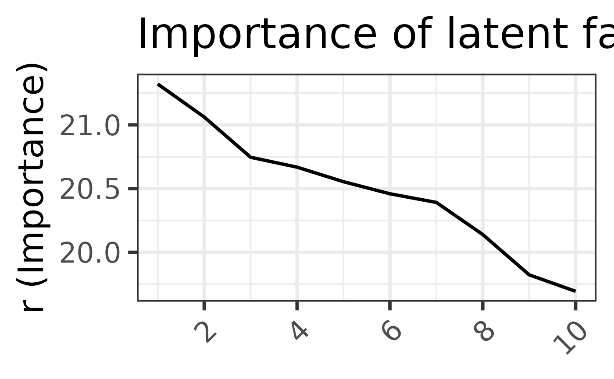

Run the TangentXY algorithm
run_tangent.RdIsolate tumor signal by removing systematic noise using a set of normal samples.
Arguments
- sif_df
Tibble or filepath to a text file containing sample metadata
- nsig_df
Tibble or filepath to a text file containing the normal signal matrix
- tsig_df
Tibble or filepath to a text file containing the tumor signal matrix
- n_latent
Number of latent factors to reconstruct normal subspace
- make_plots
If
TRUE, generate plots of latent factor importance and effects of linear transformation- output_dir
Directory to save the plots. If
NULL, the plots will be printed to the screen.
Examples
res <- run_tangent(example_sif, example_nsig_df, example_tsig_df, 5)
#>
#> Applying linear transformation ...


#>
#> Running SVD ...

#>
#> Running Tangent on autosomes and chrX ...
#> Done.
#>
#> Running Tangent on male chrY ...
#> Done.
head(res)
#> locus tumor.female1 tumor.female2 tumor.female3 tumor.female4
#> 1 1:1-100 -1.2207454 -0.559055711 -0.299517432 -0.28416243
#> 2 1:501-600 -0.6935373 0.243068129 -0.058697541 0.33545418
#> 3 1:1001-1100 -1.2577582 0.247067958 0.007995746 0.38298884
#> 4 1:1501-1600 -0.7668358 0.069592242 -0.073116565 0.17802465
#> 5 1:2001-2100 -0.6443380 0.038542539 -0.088375329 0.18877316
#> 6 1:2501-2600 -0.8606140 0.007977117 -0.016124108 -0.02767328
#> tumor.female5 tumor.male1 tumor.male2 tumor.male3 tumor.male4 tumor.male5
#> 1 0.113159726 0.53400373 0.22644206 -0.28089146 -0.109757605 -0.37694414
#> 2 0.169757218 0.03113847 -0.25177090 0.28867239 -0.052538095 0.26051191
#> 3 -0.057496259 0.12303867 0.31443193 0.06375461 -0.036210615 0.17367268
#> 4 0.121745948 0.05207100 0.05443208 -0.11708422 -0.104412773 0.17846010
#> 5 0.304135800 0.07381542 -0.17230641 0.42254227 -0.143297414 -0.09760822
#> 6 0.004180603 -0.03501344 -0.11574397 -0.07468204 -0.001779737 0.13265353